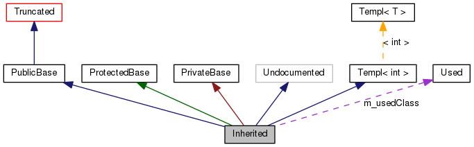

Questa pagina spiega come interpretare i grafi generati da doxygen.
Si consideri l'esempio seguente:
1 /*! Classe invisibile per troncamento */
4 /*! Classe tronca, la relazione di ereditarietà è nascosta */
5 class Truncated : public Invisible { };
7 /* Classe non documentata con i commenti speciali di doxygen*/
8 class Undocumented { };
10 /*! Classe estesa mediante ereditarietà pubblica */
11 class PublicBase : public Truncated { };
13 /*! Classe templatizzata */
14 template<class T> class Templ { };
16 /*! Classe estesa mediante ereditarietà protetta*/
17 class ProtectedBase { };
19 /*! Classe estesa mediante ereditarietà privata*/
20 class PrivateBase { };
22 /*! Classe utilizzata dalla classe Inherited */
25 /*! Classe che eredita da varie classi*/
26 class Inherited : public PublicBase,
27 protected ProtectedBase,
Verrà prodotto il grafo seguente:

I riquadri nel grafo qui sopra hanno il seguente significato:
-
Il riquadro grigio pieno rappresenta la struct o la classe per la quale il grafo è stato generato.
-
Un riquadro con un bordo nero denota una struct o una classe documentata.
-
Un riquadro con un bordo grigio indica una struct o una classe non documentata.
-
Un riquadro con un bordo rosso indica una struct o una classe per la quale non sono mostrate tutte le relazioni di ereditarietà/contenimento (un grafo viene troncato se non rientra nei limiti prestabiliti).
Le frecce hanno il seguente significato:
-
Una freccia blu scuro indica una relazione di ereditarietà pubblica tra due classi.
-
Una freccia verde indica un'ereditarietà protetta.
-
Una freccia rossa indica un'ereditarietà privata.
-
Una freccia viola tratteggiata indica che una classe è contenuta o usata da un'altra classe. La freccia viene etichettata con la o le variabili attraverso cui la struct o la classe puntata dalla freccia è accessibile.
-
Una freccia gialla tratteggiata indica la relazione tra una istanza di un template e la classe templatizzata da cui è stata istanziata. La freccia viene etichettata con i parametri di template dell'istanza.
 1.8.8
1.8.8